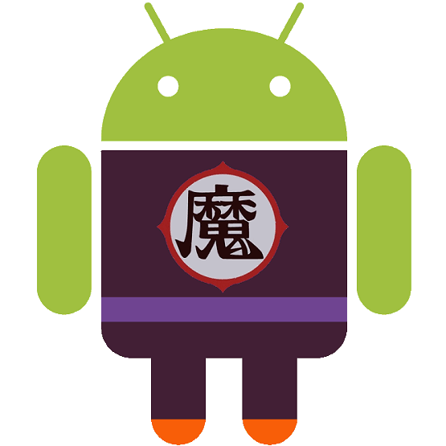
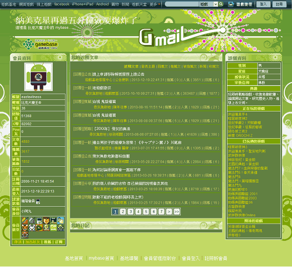

比克大魔王安卓版（Picroid）
原本使用「與妻訣別書」的暱稱搭配「TORO 貓」的頭像發嘴砲文，但可能頭像太萌的關係，回文內容越來越討喜。於是重新設計〔本文使用「口から怪光線」授權條款〕專用頭像：比克大魔王。
Android 版比克大魔王

主要用在遊戲基地的 mybase

原本使用「與妻訣別書」的暱稱搭配「TORO 貓」的頭像發嘴砲文，但可能頭像太萌的關係，回文內容越來越討喜。於是重新設計〔本文使用「口から怪光線」授權條款〕專用頭像：比克大魔王。

